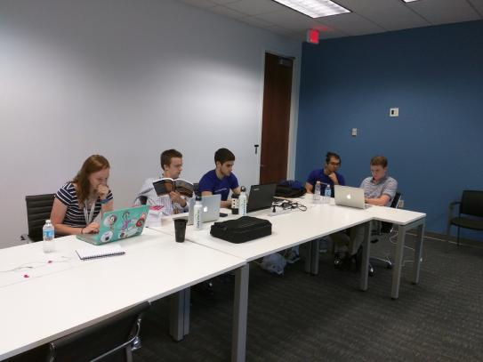

The Interns hard at work

About Data Walks
Throughout the summer we, Danny, Lindsay, Hayato, Chuck, and Bobby, have been collaborating to create the Data Walks project.
Using Garmin watches to collect coordinates, we have created an application that allows the user to view our activity on any given
day we used the watch, as well as the ability to view the tweets in the surrounding area with the simple drag of the marker. Yelp profiles
are also displayed dynamically through the drag of the marker. The user also has the ability to view their total distance, in meters, and
the calories they burned during their specific run.